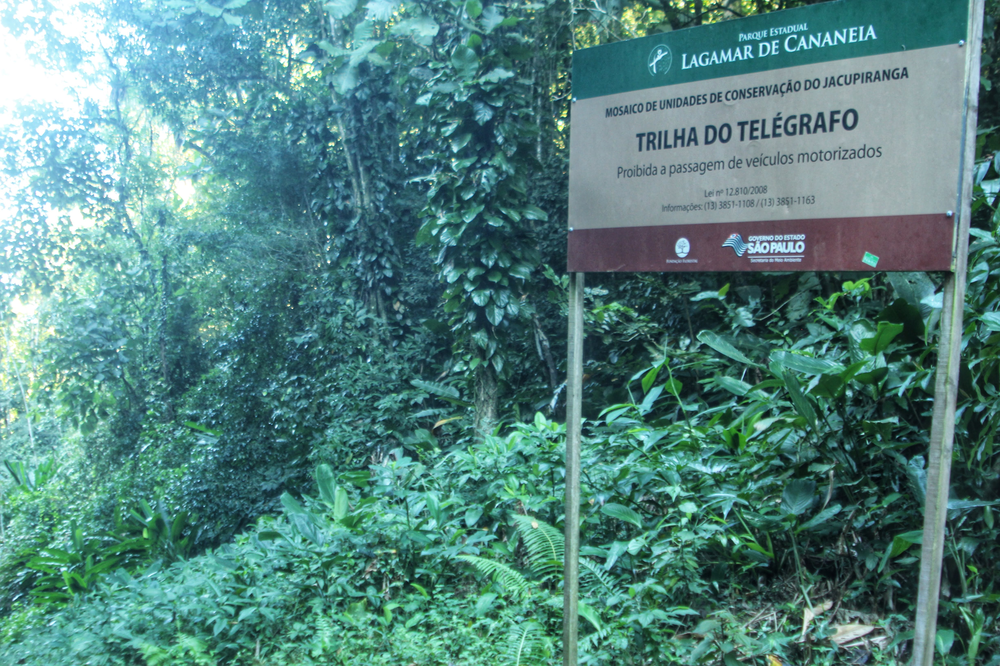

Sorocaba - Joinville
Esse rota foi montada porque queria passar em dois trechos: a serra da Macaca em São Miguel Arcanjo e a trilha do Telegrafo em Cananéia.
Dia 1: Sorocaba - São Miguel Arcanjo
Comecei em Sorocaba no dia 04/05/24 e logo pela manhã estava quente. O trecho do dia foi até São Miguel Arcanjo pela SP-264, passando pelas cidades de Salto de Pirapora e Pilar do Sul.

Distância: 84km
Hora: 09:15 - 17:30
Skina Hotel - R$80
Dia 2: São Miguel Arcanjo - Registro
Hoje o trajeto seria pela serra da Macaca, um trecho de serra que leva ao vale do Ribeira e que passa pelo parque estadual Carlos Botelho.
Tentei passar nesse trecho com o Kolb, Isidoro e Jorge em 2014 mas a estrada estava fechada para instalação de bloquetes.
Pela manhã havia muita neblina apesar de não estar frio. A descida da serra foi toda rodeada de floresta com vários pontos onde se acessava os cursos d'água.
Na parte baixa cheguei em Sete Barras e fui para Registro. O tempo estava muito quente.


Distância: 100km
Hora: 07:05 - 17:35
Regis Hotel - R$165
Dia 3: Registro - Cananeia
O dia novamente começou quente porém o trecho foi plano até Cananeia.
Andei 15 quilômetros pela rodovia Regis Bittencourt até a entrada para Pariquera-Açu. Almocei e pedalei até o bairro Itapitangui.
Confirmei que a balsa até Cananéia estava ativa e segui. Foi o dia mais fácil do caminho.

Distância: 72km
Hora: 08:10 - 17:20
Hostel Popeye - R$50
Dia 4: Guaraqueçaba
Este era o dia da trilha do telegrafo que separa o estado de São Paulo e o Paraná. Vi muitos relatos de que a trilha era difícil e cheia de lama. Mesmo com moto as pessoas tinha dificuldade de passar.
Saí cedo para ter uma margem para chegar durante o dia mas na espera da balsa tive o revés: havia muita neblina e o transporte estava parado. Esperei duas horas até a neblina se dissipar.
Assim que cheguei no continente segui pela estrada sentido Ariri. Estrada de terra plana, dia quente e um pouco de transito até o trevo para Ariri.
Passei pelo bairro Santa Maria e logo depois começa a trilha. Por causa do calor e estiagem de 2 semanas, o caminho estava praticamente seco.
Alguns riachos atravessavam a trilha por isso colocaram troncos no chão em boa parte da trilha. Assim tive que empurrar a bicicleta.
A trilha termina no bairro Boituva, em Guaraqueçaba. Depois percorri uns 25 quilômetros até o centro da cidade e parte dela no escuro.



Distância: 87km
Hora: 06:35 - 19:10
Pousada Chaua - R$80
Dia 5: Guaratuba
Acordei cansado e resolvi não pedalar a volta para Antonina mas ir de barco para Paranaguá. Tive sorte nisso porque na cidade meu pneu rasgou e troquei em uma cidade maior. Se fizesse o planejado estaria em uma estrada de terra bem longa.
Fui em asfalto para Matinhos e Garopaba onde me hospedei. A orla da praia estava vazia nessa época do ano


Distância: 63km
Hora: 06:30 - 14:20
Pousada Estrela Dourada
Dia 6: Joinville
Último dia começou com uma ventania indicando chuva. Foi um único dia que não estava quente.
O caminho foi tranquilo, inicialmente por asfalto e depois por estrada de terra até Joinville.
Almocei e consegui embarcar no ônibus para São Jose dos Campos às 15h finalizando o passeio.

Distância: 85km
Hora: 07:35 - 14:55